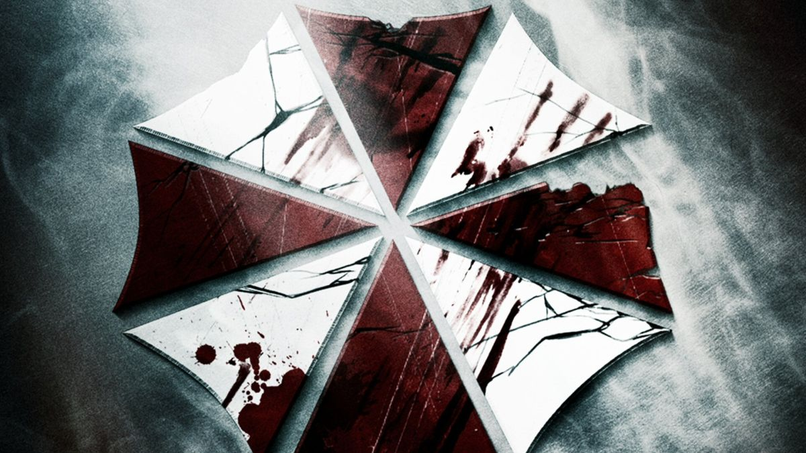

Resident Evil é uma das franquias mais amadas de todos os tempos, isso é um fato indiscutível. Muitos gêneros foram consolidados nos anos 90 e o melhor exemplo disso é o da franquia de jogos de zumbi com o Survival Horror — Metal Gear fez a mesma coisa com o gênero Stealth naquela década.
É claro que a grande maioria já conhece as desventuras dos queridos protagonistas Chris Redfield, Jill Valentine, Leon S. Kennedy, Claire Redfield e claro, milhares de outros personagens que participaram das histórias ao longo dos anos.
Entretanto, sempre é bom relembrar de toda a jornada, dos fatos históricos que ajudaram a promover o universo de Resident Evil e o principal: aquela nostalgia boa de quando tudo era novidade.
No especial de hoje vamos dissecar as histórias da série numerada da franquia. Mas iremos por partes, relembrando dos velhos momentos como se estivéssemos jogando todos os jogos pela primeira vez, combinado?
Vale lembrar que os próximos parágrafos contém spoilers. A história será contada a partir dos jogos clássicos.
A criação da Umbrella Corporation
A história da franquia Resident Evil começa muito cedo, lá na década de 60, época em que os cientistas James Marcus, Ozwell E. Spencer e Edward Ashford descobrem o Vírus Progenitor, encontrado em plantas do continente africano — que, inclusive, eram usadas por tribos para selecionar os seus líderes.
Com tanto potencial para mudar o mundo — de um jeito ruim, pois se tratavam dos antagonistas da série — os três cientistas se uniram e decidiram estudar o vegetal nos Estados Unidos.
Anos depois, em 1968, é fundada a Umbrella Corporation, uma gigante da indústria farmacêutica que servia de fachada para experimentos com o Vírus Progenitor em humanos, animais e plantas; B.O.W.’s (Bio Organic Weapons — Armas Bioterroristas), em outras palavras.
Enquanto os estudos do Progenitor continuavam, Edward Ashford é infectado de forma acidental e acaba morrendo. Nessa época, a Umbrella tinha duas filiais: uma no continente africano e outra em uma mansão nas montanhas Arklay, aos arredores de Raccoon City.
James Marcus avançava com suas pesquisas e de forma exímia conseguiu criar uma arma ainda mais poderosa: o T-Vírus, que era a união do DNA do Progenitor com sanguessugas. Depois da descoberta, dois estagiários tomaram frente do projeto e continuaram chefiando a empreitada. Sabem quem eram esses dois? Os icônicos vilões da franquia Resident Evil: Willian Birkin e Albert Wesker.
As opiniões de Spencer e Marcus começaram a divergir, resultando em disputas pelo poder dentro da empresa. A situação começa a ficar insustentável e então Spencer ordena que Birking e Wesker matem James Marcus.
Assassinado pelos seus próprios estagiários, o corpo de Marcus foi desovado em um centro de tratamento de água perto da mansão. Todavia, o cientista havia criado uma sanguessuga extremamente inteligente — chamada de Queen Leech — que se apossou de seu cadáver e o trouxe de volta à vida dez anos mais tarde nos acontecimentos de Resident Evil 0.
Por alguns anos, Willian Birkin e Albert Wesker continuaram chefiando a empreitada com o T-Vírus e conseguiram feitos surpreendentes — como reviver os mortos. Eles também criaram outras verticais na pesquisa, com projetos de B.O.W.’s inteligentes chamadas de Tyrants.

Jogos/Filmes
Além de ter vários filmes na franquia, o que realmente fez e faz com que os fãs de Resident Evil amar tanto assim os personagens, foram os jogos ao longo desses anos. Apesar dos filmes mais antigos não focarem tanto assim nos personagens mais queridos, os jogos de Resident Evil do 0 ao 8, foram desenvolvidos para dar bastante sustos aos seus jogadores, e não é à toa que todos desejam um filme baseado nos jogos, um filme fiel a eles! Nesse ano de 2021 será lançado um filme baseado nos jogos. O filme estreia no dia 02 de Dezembro de 2021, tendo os atores principais: Kaya Scodelario como Claire Redfield, Avan Jogia como Leon S. Kennedy, Robbie Amell como Chris Redfield e Hannah John‑Kamen como Jill Valentine, principais personagens do mundo dos games!
O jogo de número 4 foi um dos que mais fizeram sucesso no ano de seu lançamento (2005) e faz até hoje. Bateu uma nostalgia? Mata a saudade e reveja o jogo no vídeo abaixo.